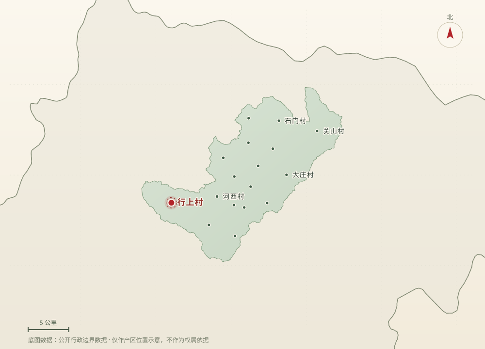
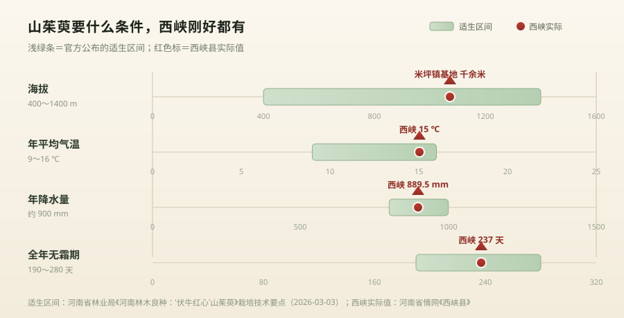
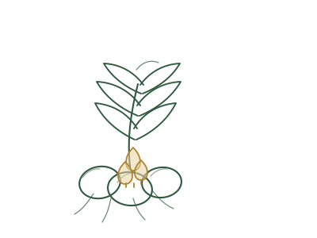
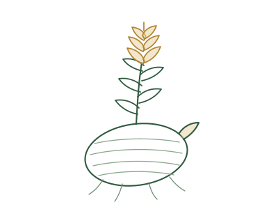
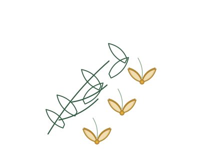
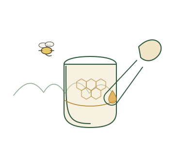
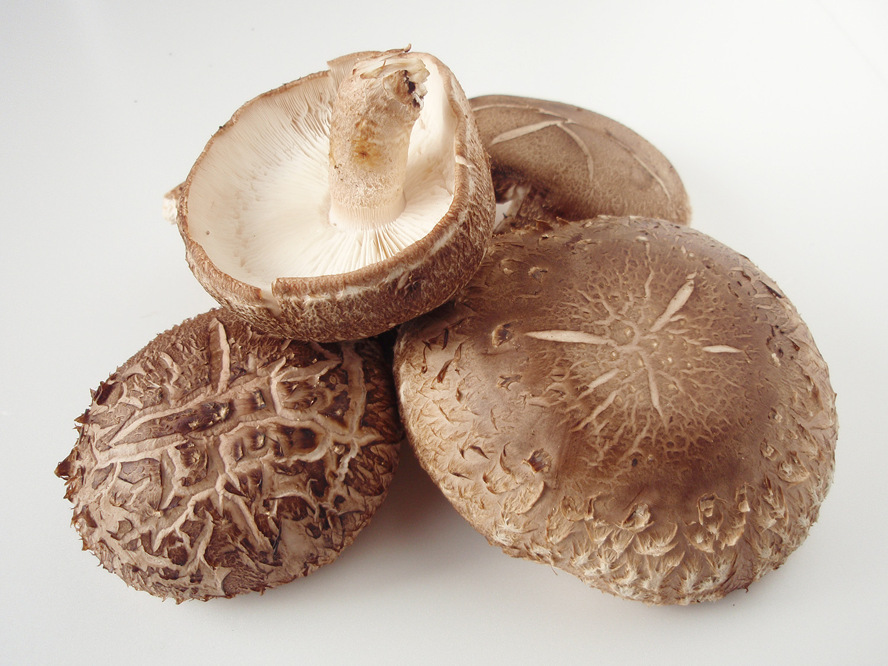

它的老家，就在伏牛山
山茱萸天然分布于河南伏牛山、陕西汉中地区和浙江天目山。米坪镇就在伏牛山腹地—— 我们不是把别处的树种搬到这儿来试，而是站在它原本就生长的那片山里种它。
- 米坪镇区位伏牛山腹地
- 基地海拔千余米
- 产区森林覆盖率超 85%
河南省南阳市西峡县 · 米坪镇行上村 · 海拔千余米
伏牛山深处，一颗红果的野生本味
野生山茱萸、九蒸九晒黄精、伏牛山天麻与连翘。基地在海拔千余米的山坡上，不搞大棚、不催熟不打药， 从山头到货架由我们自己走完这一程——看得见的源头，信得过的品质。
山养百年 · 人守一味
品牌故事
2018 年，行上村的金星放弃了城里的稳定工作，回到家乡，从几亩地开始， 在海拔千余米的山坡上建起生态种植基地。
米坪镇地处豫西南伏牛山区，海拔高、温差大、森林覆盖率超 85%，是天然的中药材宝库。 这里的山茱萸以肉厚色正、有效成分足闻名全国，被称作“中药软黄金”。 但多年间交通不便、信息闭塞，好药材只能等药商上门收，卖什么价由别人说了算——守着宝山，却常常丰产不丰收。
“我们不搞大棚，不催熟不打药，就是要保留药材的‘野性’。”金星坚持用传统农法种出地道味道。 三年后，他拉起一支年轻团队，办起初加工车间，建成标准化基地、加工厂和可储存 8000 吨药材的冷链仓储中心， 把从地头直达货架的链条一段段接了起来。
“他们叫它‘养老树’，我也想借这个名字，唤回更多在城里打拼的年轻人，回来建设家乡。”
以前村里种的药材，只能等药商来收，卖啥价人家说了算；现在对着手机直播，全国的订单都来了。
—— 晟行中药材加工厂主播 刘佩林（据南阳晚报、河南日报农村版报道）金星回到行上村，在海拔千余米的山坡上试种山茱萸，坚持不催熟、不打药的传统农法。
与几位志同道合的年轻人共同筹资创建南阳晟行农业发展有限公司，以“村集体 + 乡贤”的模式经营，主营山茱萸、黄精、天麻、连翘等特色道地药材。
5000 亩山茱萸基地、2 个 500 亩黄精基地、3000 亩连翘基地陆续成形，配套 4.6 亩初加工厂与 8000 吨冷链储备库。
主打野生山茱萸、九蒸九晒黄精等地道山货，所有产品原产地直供，强调“看得见的源头、信得过的品质”。
返乡大学生当起“村播”，一部手机、一段土话家常，一场直播订单常破千单；全镇线上销售额突破 200 万元，带动线下交易超 1200 万元。
道地产区
米坪镇位于河南省南阳市西峡县北部山区，距县城约 58 公里，辖 17 个行政村。 这里地处伏牛山腹地，海拔落差大、昼夜温差大、森林覆盖率超 85%，是天然的中药材宝库。

产地密码
2026 年 3 月，河南省林业局公布了一批新审定的林木良种，其中就有一个山茱萸品种——由河南省农业科学院西峡分院 等单位选育的「伏牛红心」。审定文件把它的适生条件写得很具体：海拔 400～1400 米、年平均气温 9～16℃、 年降水量 900 毫米左右、全年无霜期 190～280 天。把这些条件跟西峡的家底一条条对，几乎严丝合缝。

山茱萸天然分布于河南伏牛山、陕西汉中地区和浙江天目山。米坪镇就在伏牛山腹地—— 我们不是把别处的树种搬到这儿来试，而是站在它原本就生长的那片山里种它。
国家林业和草原局的资料明确写着：国内有三大优质山茱萸生产基地——陕西汉中佛坪县、河南南阳西峡县、 浙江淳安县，三地出品的山茱萸均为国家地理标志产品。
「伏牛红心」山茱萸编号 豫S-SV-CO-014-2025，申请人是河南省农业科学院西峡分院、南阳市林业发展服务中心， 属 2025 年度河南省审定的林木良种。审定文件公布的数据：
说明：「伏牛红心」是省农科院西峡分院选育的良种，不等于我们基地每一棵树都是这个品种。 把它列出来，是想说明西峡在山茱萸种质资源上的位置。
下面是历代本草与史料的记载，属于中医药历史文化。我们把它列出来，是因为其中一条直接决定了我们的加工方式。
山茱萸之名最早见于《神农本草经》，两千多年来一直是一味常用药材。
相传孙思邈从伏牛山采药归来，昏倒村口，被村民救起。临别时他留下一株草药，说既可维持生计，也能繁衍子孙。自此山茱萸在伏牛山一带扎下根来——就在我们这片山里。
李时珍集历代医家应用山茱萸的经验，将这味药收入《本草纲目》。
近代医家张锡纯在长期实践中，反复强调一条关于山萸肉的加工要求。
「用时务须将核去净，其核之性与肉相反。」
—— 近代医家 张锡纯这句话讲的是加工，不是功效，所以我们才敢写在这里。它正是我们只做“去核萸肉”的原因： 果核既不出肉，性质又与果肉相反，必须挑干净。这也是这味药材最基础、最费人工的一道工序—— 你买到的一级萸肉，贵就贵在这里。
免责：以上本草与史料记载属于中医药历史文化，不构成本店产品的功效说明。 本页不作任何疾病预防或治疗承诺，本品不能代替药物。
道地药材
山茱萸、黄精、天麻、连翘、土蜂蜜、香菇——同一条产业链上的六样物产。 零售按件发货，批发按等级议价，也可以按你的标准做分级和定制加工。
Cornus officinalis
伏牛山区的“小红果”，米坪产区的山茱萸以肉厚色正、有效成分足被全国药商熟悉。鲜果、干品、去核萸肉三种形态。

古法



“挑货时要留心的”是行业里常见的几种情况，供你在任何渠道买东西时对照；不是说别人家的货都这样。
按常见的家庭用量算一笔账，你心里就有数了。
再算上它常和黄精、枸杞搭着用，其实每次就是几克的事。 买对等级、按需买量，才是真正的划算——不是把便宜当性价比。
| 买法 | 适合谁 | 特点 |
|---|---|---|
| 一级去核萸肉 | 送长辈、走节礼、对品质有要求的 | 肉厚色正、杂质少，支持先看样再下单 |
| 统货干品 | 自家日常煲汤、泡茶 | 性价比最高，需要自己挑拣一下 |
| 鲜果 | 想自己做果酒、果酱、自己晒的 | 只有秋末冬初有货，需冷藏快运 |
| 组合礼盒 | 中秋、春节、看望长辈 | 萸肉＋九蒸九晒黄精＋土蜂蜜，可按预算配比 |
| 整批 / 代加工 | 药企、饮片厂、电商平台 | 1000 亩黄精、3000 亩连翘基地常备货源，支持分级与贴牌 |
产地直供是什么意思：从树上到包装只经过我们自己的手——基地 → 加工厂 → 冷链仓 → 快递。 产地货转三道手、每道加一次价的情况，在我们这儿不存在。
古法工艺
黄精从土里挖出来只是开始。蒸要足汽蒸透，晒要摊开晒匀， 一蒸一晒为一次，如此反复九次。颜色一天天由黄转黑，油润透亮； 口感也从最初的麻，慢慢变成甘润。
这套工序没有捷径可走：周期以月计，每一次蒸晒都伴随水分与重量的损耗， 火候和次数最终还要靠师傅的手感和经验来把握。
科研依据
山茱萸、黄精、天麻、连翘，都是国内外期刊上被反复研究的对象。下面每一条都附了文献出处， 你可以自己去搜原文核对——包括对我们不利的那些结论，我们也没删。
Huang J, et al. Ethnopharmacology, phytochemistry, and pharmacology of Cornus officinalis Sieb. et Zucc. J Ethnopharmacol, 2018, 213: 280-301. doi:10.1016/j.jep.2017.11.010
Jiang W, et al. Loganin and morroniside: Therapeutic effects and molecular mechanisms in diabetes mellitus and its complications—A review. Eur J Pharmacol, 2025, 1003: 177993. doi:10.1016/j.ejphar.2025.177993
周瑞静 等. 不同产地山茱萸中没食子酸、莫诺苷及马钱苷成分含量的测定及临床意义. 浙江临床医学, 2022 年第 4 期.
喻卫武 等. 两大主产区山茱萸性状变异与产区差异分析. 浙江林学院学报, 2010 年第 5 期.
（题名可在知网检索核对）
秦宇雯 等. 九蒸九晒黄精炮制工艺的研究进展. 中草药, 2020, 51(21).
杨圣贤 等. 黄精“九蒸九制”炮制过程中多糖及皂苷的含量变化. 湖南师范大学学报(医学版), 2017 年第 5 期.
（题名可在知网检索核对）
王佳 等. 基于性状-成分-活性关联性比较多花黄精九蒸九制过程中质量变化规律. 中草药, 2026, 57(11): 4158-4171.
doi:10.7501/j.issn.0253-2670.2026.11.008
罗欣 等. 九蒸九制对九华山多花黄精品质的影响. 中国酿造, 2025, 44(2): 144-149.
马永强 等. 九蒸九制对黄精中 AGEs 含量、多糖结构及体外活性的影响. 食品工业科技, 2024, 45(3): 226-234.
doi:10.13386/j.issn1002-0306.2022100318
Cui X, et al. A Review: The Bioactivities and Pharmacological Applications of Polygonatum sibiricum Polysaccharides.
Molecules, 2018, 23(5): 1170.
doi:10.3390/molecules23051170
Zhao P, et al. The genus Polygonatum: A review of ethnopharmacology, phytochemistry and pharmacology.
J Ethnopharmacol, 2018, 214: 274-291.
doi:10.1016/j.jep.2017.12.006
He X, et al. The role of gastrodin in the management of CNS-related diseases.
Phytother Res, 2024, 38(11): 5107-5133.
doi:10.1002/ptr.8314
Yang Y, et al. Extraction, Purification, Structural Characteristics, Biological Activities, and Applications of Polysaccharides from Gastrodia elata: A Review.
Molecules, 2025, 30(2): 262.
doi:10.3390/molecules30020262
Gong L, et al. A review of pharmacological and pharmacokinetic properties of Forsythiaside A.
Pharmacol Res, 2021, 169: 105690.
doi:10.1016/j.phrs.2021.105690
Li JJ, et al. The phytochemistry, pharmacology, pharmacokinetics, quality control, and toxicity of Forsythiae Fructus: An updated systematic review.
Phytochemistry, 2024, 222: 114096.
doi:10.1016/j.phytochem.2024.114096
全产业链
行上村推行“统一收购、统一加工、统一销售”，把过去“靠天收、贱卖果”的局面翻了过来。 种植、采收、加工、仓储、品牌电商五个环节串成一条链，每个环节都留得下痕迹。
海拔千余米山坡建园，不搞大棚、不催熟不打药，保留药材的“野性”。
5000 亩基地合作社统一收购，老人上树摘果、年轻人筛选装箱，家门口就能挣到钱。
37 家合作社清洗、烘干、切片自动化设备配合九蒸九晒古法，分级后再出品。
4.6 亩加工厂分区储存、控温控湿，稳住品质与供应，随时可以出货。
8000 吨容量村播直播 + 原产地直发，镜头对着采收和加工现场，看得见才信得过。
线上 200 万元+食用指南
山茱萸去核后的“萸肉”，是传统药食两用原料；黄精经九蒸九晒后更适合日常煮水、炖汤。 下面三种是民间常见做法，用量可按口味调整。
萸肉 5–8 克 + 枸杞 5 克
萸肉 10 克 + 大米 100 克
萸肉 15 克 + 排骨或鸡 500 克
温馨提示：山茱萸、天麻、黄精、蜂蜜都属于国家认定的食药物质，但不能代替药物，也不承诺任何功效。 国家卫生健康委员会在 2023 年第 9 号公告中建议：按传统方式适量食用；孕妇、哺乳期妇女及婴幼儿等特殊人群不推荐食用。 正在服药或有慢性疾病的人群，请先咨询医师或药师。 干货请密封避光、阴凉干燥存放，梅雨季建议冷藏，出现返潮霉变请停止食用。
银发经济
2024 年，国务院办公厅第一次以“银发经济”为题发文，把中医药养生保健、适合老年人的保健食品写进了国家部署。 我们做的这盘山货，正好站在这条线上。
一壶萸肉茶，一锅萸肉汤。这不是我们编的吃法——国家卫健委在 2023 年第 9 号公告的解读里写得很清楚： 山茱萸在河南等省份本就有作为食品原料食用的历史，主要用于煲汤、入菜。
官方建议：按传统方式适量食用。
山茱萸 + 九蒸九晒黄精 + 伏牛山土蜂蜜，装成一盒。比烟酒实在， 也比说得天花乱坠的保健品踏实——因为这几样的身份是国家认可的食药物质，产地、等级、批次都写在外包装上。
支持礼盒定制，可按预算配比。
国办发〔2024〕1 号给“银发经济”下的定义里，除了服务老年人，还有一句 “以及为老龄阶段做准备”。四十岁往后就把药食同源的东西放进日常饮食，其实一点都不早。
从一杯萸肉枸杞茶开始，成本很低。
国家卫生健康委员会、国家市场监督管理总局 2023 年第 9 号公告，将党参、肉苁蓉（荒漠）、铁皮石斛、西洋参、 黄芪、灵芝、山茱萸、天麻、杜仲叶 9 种物质纳入《按照传统既是食品又是中药材的物质目录》。 查看公告转载
“山茱萸在陕西、河南等省份有作为食品原料食用的历史，主要用于煲汤、入菜、传统方式制作果酒、果汁、 蜜饯果脯等”；同时建议按传统方式适量食用，孕妇、哺乳期妇女及婴幼儿等特殊人群不推荐食用。
国办发〔2024〕1 号提出“扩大中医药在养生保健领域的应用”，并要求“鼓励研发适合老年人咀嚼吞咽和 营养要求的保健食品、特殊医学用配方食品”。 查看原文
卫生部《关于进一步规范保健食品原料管理的通知》（卫法监发〔2002〕51 号）附件“既是食品又是药品的物品名单” 中就有黄精和蜂蜜；连翘不在这两份名单内，属于中药材，我们只按原料供应给药企与饮片厂。
直播助农
没有布景，背景就是青山绿水；不用话术，张口就是土话家常。 返乡的大学生、加工厂里的主播、负责筛选装箱的老人——一家人齐上阵，日子比往年红火得多。
好产品会说话，但更需要有人讲出它的故事。
—— 返乡“村播” 乔亿恒（据河南日报农村版报道）过去论斤卖原料，价格随行就市；如今搞深加工、打品牌、走电商， 每斤山茱萸的收购价涨了近十元。米坪镇 37 家合作社、150 多家收购门店织密了产销网络， 电商培训免费开到村头。
媒体报道
页面中的数据与故事，均来自以下公开报道。点击可查看原文。
批发与合作
依托“村集体 + 乡贤”模式和米坪镇中药材市场资源，我们为药企、饮片企业及电商平台提供 优质货源供给 + 定制化加工 + 一体化发货的全链条服务。
山茱萸、黄精、天麻、连翘、土蜂蜜、香菇常备货源，按等级分选，支持长期稳定供应与产地看货。
清洗、烘干、切片、分级、九蒸九晒，可按客户标准执行，接受来样定做与贴牌包装。
8000 吨冷链仓储支撑，支持整车批发、邮政与快递一件代发、礼盒定制与节令团购。
常见问题
萸老头由行上村党支部书记金星于 2025 年春创立，运营主体是南阳晟行农业发展有限公司。我们走的是合作社统一收购、统一加工、统一销售的路子，自有山茱萸、黄精、连翘种植基地，配套加工厂与冷链仓储，产品原产地直供，随货可提供批次与产地信息。
记住“看、摸、闻、尝”四步：
米坪产区的山茱萸以肉厚色正、有效成分足被全国药商熟悉，这也是一级货和统货拉开价差的地方。
密封、避光、阴凉干燥处存放，远离厨房油烟与潮湿墙面。梅雨季建议冷藏或冷冻，取用后立即封口。发现返潮、霉变、虫蛀或异味，请停止食用。
三种最常见的民间做法：萸肉枸杞茶（萸肉 5–8 克加枸杞 5 克，沸水冲泡 10 分钟）、山茱萸粥（萸肉 10 克加大米 100 克同煮）、萸肉炖汤（萸肉 15 克加排骨或鸡 500 克砂锅慢炖）。食用请适量，特殊人群请先咨询医师。
因为工序按次计、周期以月计。蒸要足汽蒸透，晒要摊开晒匀，一蒸一晒为一次，反复九次；每次蒸晒都带来水分与重量的损耗，人工和时间成本远高于一次烘干。成品颜色由黄转黑、油润透亮，口感也由麻转为甘润。
本站产品属于传统药食两用农产品，不能代替药物，也不承诺任何功效。孕妇、婴幼儿、儿童、正在服药或有慢性疾病的人群，请先咨询医师或药师再决定是否食用。
支持。可为药企、饮片企业、电商平台与商超提供优质货源供给、定制化初加工（清洗、烘干、切片、分级、九蒸九晒）和一体化发货，也可按客户标准做分级与包装。具体规格、起订量与价格请电话或微信沟通。
西峡县对香菇、猕猴桃、山茱萸三大国家地理标志保护产品实行“源头赋码、过程控码、终端验码”的闭环管理和“一品一码、扫码溯源”。我们随货提供批次与产地信息，基地、加工厂和仓储都欢迎实地看货。
另外提醒：如果价格明显低于市场行情，多半不是米坪一级货，务必先看样再下单。
山茱萸和天麻，现在都是国家认定的“按照传统既是食品又是中药材的物质”。
2023 年 11 月，国家卫生健康委员会与国家市场监督管理总局发布公告，将党参、肉苁蓉（荒漠）、铁皮石斛、西洋参、黄芪、灵芝、山茱萸、天麻、杜仲叶 9 种物质纳入《按照传统既是食品又是中药材的物质目录》。这意味着它们可以按食品原料使用，也就是常说的“药食同源”。
黄精、蜂蜜则在更早的名单里——2002 年卫生部《关于进一步规范保健食品原料管理的通知》（卫法监发〔2002〕51 号）附件“既是食品又是药品的物品名单”中就有它们。
连翘不在这两个名单内，属于中药材，我们只按原料供应给药企和饮片厂，不建议也不宣传食用。
“能当食品用”不等于“可以随便吃”。我们的建议是把它当配料，而不是当主食：
正在服药、有慢性疾病、处于孕期或哺乳期的人群，请先咨询医师或药师。
不是，也不允许是。
那些文献研究的对象是药材的化学成分、提取物和实验模型，绝大多数是体外实验与动物实验，既不等于我们的产品有这些作用，也不构成任何疾病预防或治疗承诺。
我们把文献列出来，是想让你知道“这些山货为什么值得被认真研究”，同时把结论的边界一起讲清楚——包括对我们不利的那些：比如有研究直接写明相关成分“证据仍以临床前研究为主”，也有研究对“到底蒸几次最好”给出了完全不同的答案。这些我们都没有删。
买东西看产地、等级、工艺、批次，比看功效宣传可靠得多。
联系与订购
零售、批发、代加工、礼盒定制都可以聊。电话微信都在下面，留言我们也会看。
把这里换成合作社或门店的企业微信二维码，客户扫码即可咨询、下单、查发货。